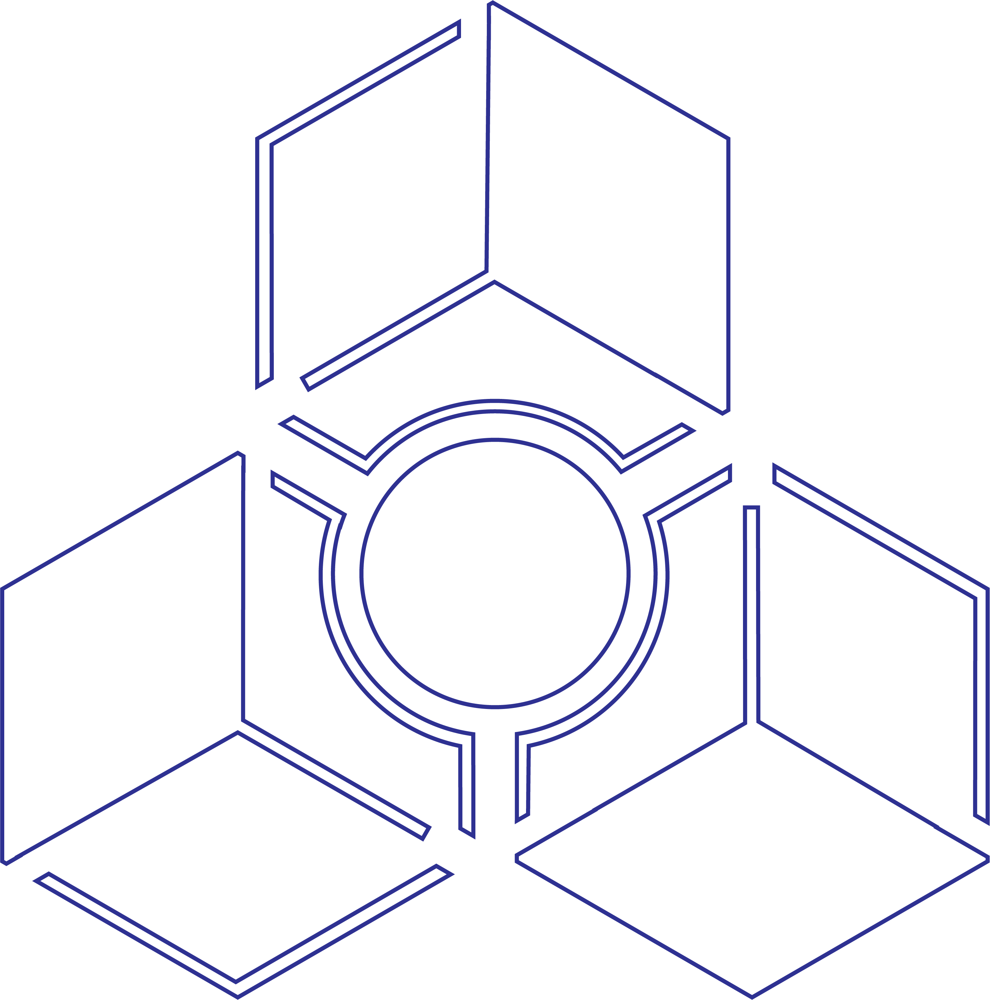

Here's a stencil I made, cut out, and then painted with. It's a stencil of the old logo for a music program I really enjoy, Reason. I choose Reason since the logo seemed like it would be recognizable without color, would look interesting, and would be a bit of a challenge to remove any floating bits that might fall out after being cut with the laser cutter. The orange painted version I wound up making looks nice and fits the original logo well.